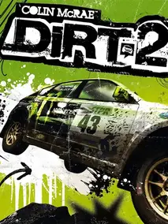

 |
|
| Tiempo de juego | No Jugado |
| Última actividad | Nunca |
| Añadido | 21/11/2025 0:43:46 |
| Modificado | 21/11/2025 0:49:56 |
| Estado de finalización | Not Played |
| Librería | Playnite |
| Fuente | |
| Plataforma | PC (Windows) |
| Fecha de lanzamiento | 8/9/2009 |
| Puntuación de la Comunidad | 79 |
| Puntuación de la Crítica | 79 |
| Puntuación de usuario | |
| Género | Racing Sport |
| Desarrollador | Codemasters Codemasters Southam |
| Editor | Codemasters Sony Computer Entertainment |
| Característica | Multiplayer Single Player |
| Enlaces | |
| Tag | |
Más que un juego de carreras, una gira mundial de adrenalina. Colin McRae: DiRT 2 abandonó la seriedad de los simuladores clásicos para abrazar la cultura de los X Games. Es sucio, ruidoso y tiene una de las mejores atmósferas jamás creadas en un juego de conducción.
Viví la vida del piloto desde tu Motorhome, viajando por el mundo y compitiendo contra estrellas como Ken Block y Travis Pastrana.
Con una banda sonora bestial (The Prodigy, Wolfmother, Queens of the Stone Age) y un manejo arcade-sim perfecto, DiRT 2 es pura diversión embarrada.